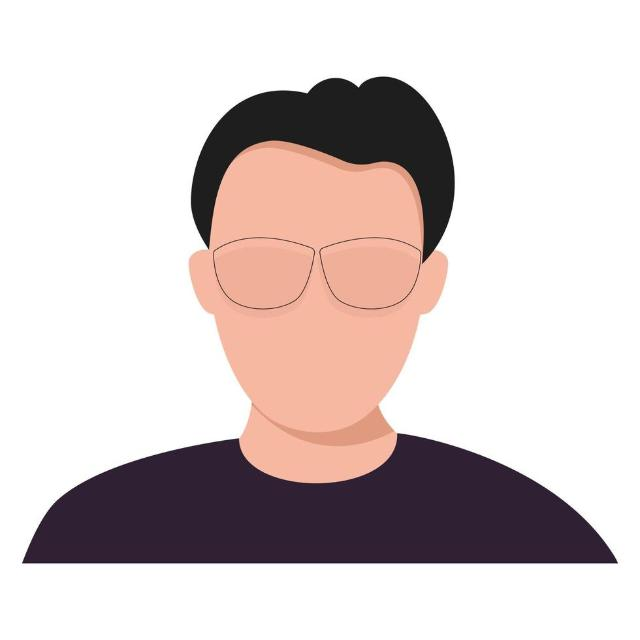

Programammer Designer, Engineer, Professor
Rosario, AR
leandro_dziej@yahoo.es, leandrodziej@gmail.com
+54-9-341-5043990
Skills (Programing)
Python
C, C++, C#
Java
PHP
JavaScript, JQuery
HTML, CSS
Languages
Spanish
English
French
German
Italian
Clickear aqui arriba para ampliar la informacion
Clickear aqui arriba para ampliar la informacion
Clickear aqui arriba para ampliar la informacion
Position of ATTP in Electronic Systems, Technology, Computing and Computer Science, at the IPS (Superior Polytechnic Institute of Rosario), UNR.
Position of JTP in Electronic Engineering, at the FCEIA (Faculty of Engineering), UNR, in the Matter of Theory of Circuits.
Professor of Physics, Automation, Computing and Programming in the Province of Santa Fe in the Secondary School and in the Superior Level.
Professor of General Electrical Engineering in the Province of Santa Fe in the Secondary School and in the Superior Level.
Position in Education, Full Time Professor and ATTP, in the Province of Santa Fe in the Secondary School and in the Superior Level.
Independent consultant of companies in the area of computing, programming, systems, software development, and management.
Participation and Collaboration in International Projects.
Graduate Clerk of the Advisory Commission at the FCEIA (Faculty of Engineering) of the UNR.
Several educational works at the IPS (Polytechnic Institute of Rosario), UNR, and at the Province of Santa Fe, Argentine, in the Secondary School and in the Superior Level.
Participation in conferences, seminars, seminars, courses, symposiums, panels, workshops, talks, meetings and other academic events.
Presentation and publication of the papers and research works.
Technical texts (documents, scripts, etc.) for education in the areas of computer science, technology and engineering.
Updating in programming, engineering, and education. Participation in continuous updating and improvement activities. W3Schools.com - Web Development! All I need to know in one place.
Clickear aqui arriba para ampliar la informacion
Graduate in Electronic Engineer obtained at the FCEIA (Faculty of Exact Sciences and Engineering).
Graduate in Education, as Professor, obtained at the UCU (University of Concepción del Uruguay).
Postgraduate in Management, Specialization/Master's Degree in Business Management at the FCEIA (Faculty of Exact Sciences and Engineering).
Postgraduate in Occupational Health, Specialization's Degree in Occupational Health at the FCEIA (Faculty of Exact Sciences and Engineering).
Specialization in Education and IT, by the Ministry of Education of the Argentine Nation.
Courses for Professors and Certification: at the INET (National Institute of Technological Education of Argentine), at the INFOD (National Institute of Professor Training of Argentine), at the IPS, at the FCEIA, and at the UNR.